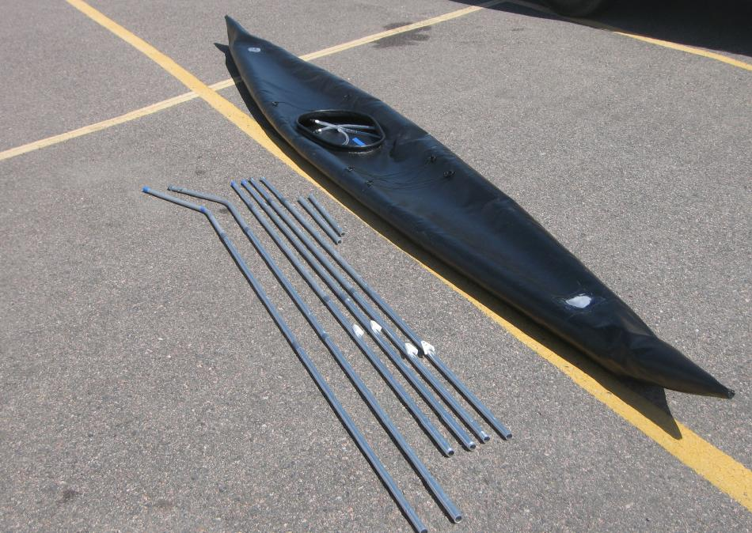

| Sonnet 16 | Menu Last Page Next Page |
|

The entire frame assembly ( tubes connected) is layed out next to the skin. Noticably absent are any cross sections, bow and stern connections of the stringers, or zippers. Use the (BACK) key to return.
The keel is inserted first, the side stringers next, followed by the cross braces. These position the side stringers against the side skin, and then the sponsons are inflated. Assembly is consistently less than 10 minutes with disassembly less than 5 minutes. The 4 sponsons, when inflated, "trap" the chines and together with the keel, provide good overall rigidity. |
|